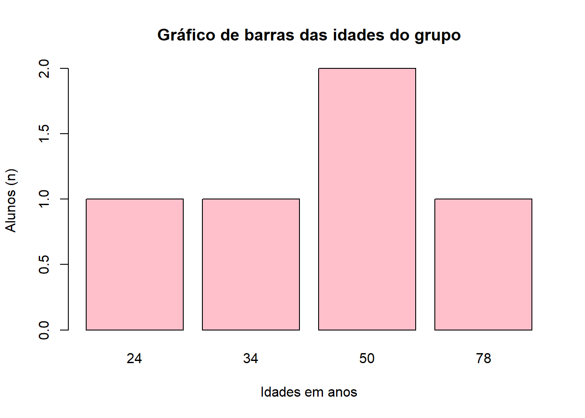
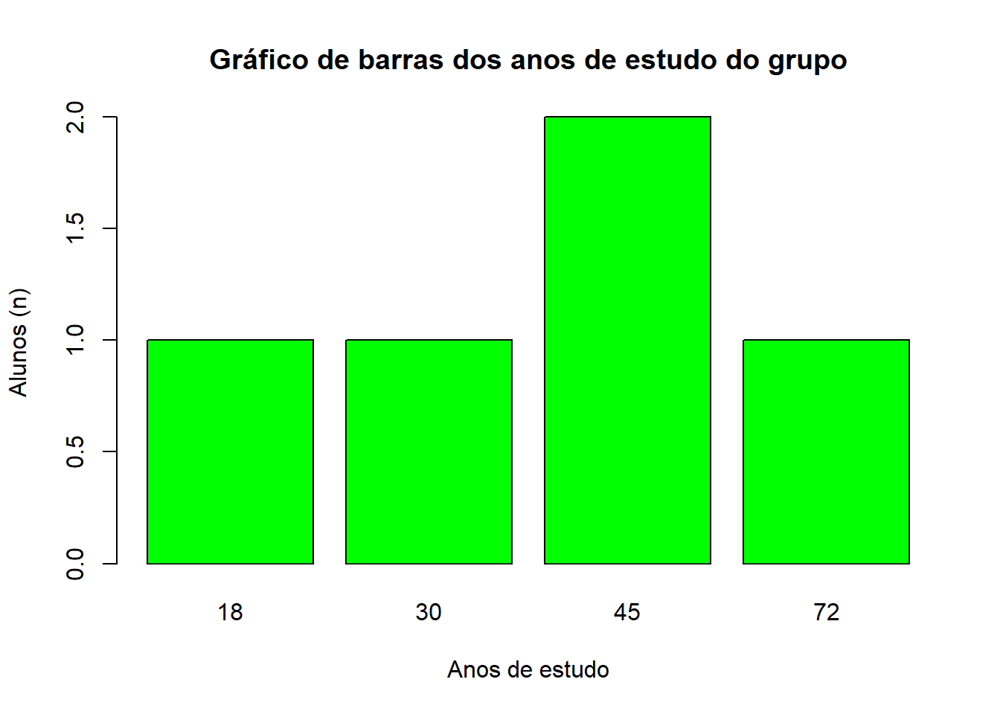
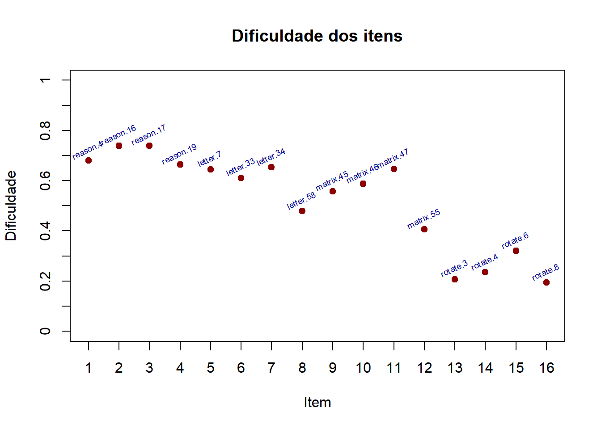
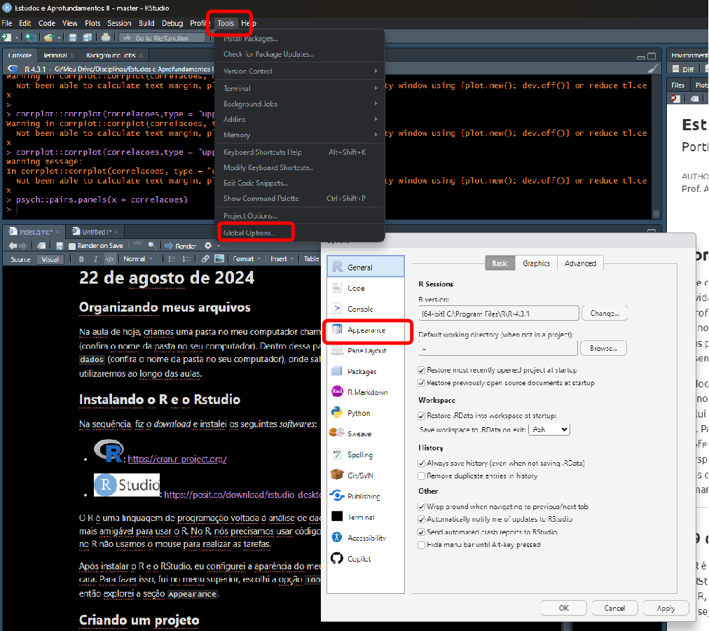
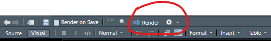

# como nomear objetos:
exemplo.de.nome <- "exemplo"
exemplo_de_nome <- "exemplo"
exemploNome <- "exemplo"
nomeExemplo <- "exemplo"Estudos e Aprofundamentos II - 2024.2
Portfólio de Atividades Realizadas em Aula
Como utilizar este documento
Este documento serve como um portfólio que registra as atividades realizadas em sala de aula na disciplina Estudos e Aprofundamentos II, ofertada no segundo semestre de 2024. Alunos da disciplina podem utilizá-lo como um guia para elaborar seus próprios portfólios, além de acessar recursos úteis para o desenvolvimento de habilidades no R.
O documento está estruturado em formato de blog, organizado cronologicamente de forma decrescente. Cada entrada de data inclui subtítulos que identificam as atividades realizadas naquele dia. Para facilitar a navegação, utilize o menu disponível. O professor redigiu os registros em primeira pessoa, simulando a perspectiva de um estudante da disciplina que está documentando suas experiências em um diário. Este documento será atualizado semanalmente pelo professor.
05 de setembro
Nessa aula, vamos explorar o conceito de objetos e tipos de dados no R, que são fundamentais para trabalhar com esta linguagem. No R, tudo é um objeto, desde números simples até estruturas complexas como data frames. Vamos entender como criar e manipular esses objetos, e também discutir os principais tipos de dados, como numéricos, caracteres, lógicos e fatores. Compreender esses conceitos permitirá que você armazene e manipule dados em seus projetos de pesquisa.
Objetos
No R, um objeto é qualquer entidade que pode armazenar dados. Todos os dados em R são armazenados em objetos, que podem variar de tipos simples, como números (numéricos), texto (caracteres) e valores lógicos (por exemplo, TRUE ou FALSE), até estruturas mais complexas, como vetores, listas, matrizes, data frames e funções. Objetos podem ser criados atribuindo valores a eles com o operador <-, e uma vez criados, podem ser manipulados ou chamados para as análises de dados.
Nomeando objetos
Ao nomear um objeto no R, existem algumas regras básicas:
Iniciar com letra ou ponto: O nome deve começar com uma letra (maiúscula ou minúscula) ou um ponto, mas não com um número.
Não usar palavras reservadas: Certas palavras, como
if,else,TRUE, eFALSE, são reservadas e não podem ser usadas como nomes de objetos.Sensível a maiúsculas/minúsculas:
nomeeNomesão considerados objetos diferentes.Evitar espaços: Use underscores (
_) ou pontos (.) para separar palavras.
Exemplo: minha_variavel, meu.objeto são válidos.
#como NÃO nomear objetos:
99nome <- "valor"
TRUE <- "valor"
if <- "valor"Aqui estão algumas dicas para nomear objetos no R de forma eficiente e clara:
Seja descritivo, mas conciso: use nomes que indiquem a função ou conteúdo do objeto, como
dados_analiseoumedia_vendas.Use underscores ou camelCase: Separe palavras com underscores (
dados_vendas) ou use camelCase (dadosVendas), facilitando a leitura.Evite nomes muito longos: Prefira
media_grupoem vez demedia_grupo_ano_mes_analise.Use siglas ou abreviações comuns: Se for algo repetido, como “dados”, pode usar
dfpara data frame, por exemplo,df_vendas.
Objetos e tipos de dados
Numéricos
Armazena números, podendo ser inteiros ou decimais. No caso de decimais, o R usa como separador o ".", não a ",".
# Criando um objeto numérico:
numero.um <- 1
numero.dois <- 2
numero_inteiro <- 543
decimais <- 0.5
# Verificando o quê tem dentro do objeto:
numero.um[1] 1numero.dois[1] 2numero_inteiro[1] 543decimais[1] 0.5# Verificando o tipo (classe) de dados de um objeto:
class(numero.um)[1] "numeric"class(numero.dois)[1] "numeric"class(numero_inteiro)[1] "numeric"class(decimais)[1] "numeric"Caracteres
Sequências de texto (strings).
# Criando um objeto numérico:
meu.texto <- "texto vem aqui entre aspas"
meuNome <- "alexandre"
outro_texto <- "outro texto"
titulo <- "texto"
# Verificando o quê tem dentro do objeto:
meu.texto[1] "texto vem aqui entre aspas"meuNome[1] "alexandre"outro_texto[1] "outro texto"titulo[1] "texto"# Verificando o tipo de dado de um objeto:
class(meu.texto)[1] "character"class(meuNome)[1] "character"class(outro_texto)[1] "character"class(titulo)[1] "character"Lógicos
Valores booleanos em R, também conhecidos como valores lógicos, representam uma condição de verdadeiro ou falso. Existem dois valores booleanos em R:
TRUE: Verdadeiro.
FALSE: Falso.
x <- 5
y <- 10
# Comparação que retorna um valor booleano
x == y #FALSE[1] FALSEx < y #TRUE[1] TRUEy > x #FALSE[1] TRUEFator
Representa variáveis categóricas com níveis. Exemplo: sexo com níveis "masculino" e "feminino".
# Criando um vetor com categorias
sexo <- c("masculino", "feminino", "feminino", "masculino")
# Convertendo para fator
fator_sexo <- factor(sexo)
# Verificando os níveis
levels(fator_sexo)[1] "feminino" "masculino"Vetor
Vetores são sequências de elementos do mesmo tipo. Eles podem conter números, caracteres, ou valores lógicos.
# Criando vetores numéricos, de caracteres e lógicos
vetor_numerico <- c(1, 2, 3, 4, 5)
vetor_caractere <- c("a", "b", "c")
vetor_logico <- c(TRUE, FALSE, TRUE)
# Exibindo os vetores
vetor_numerico[1] 1 2 3 4 5vetor_caractere[1] "a" "b" "c"vetor_logico[1] TRUE FALSE TRUE# Verificando o tipo de cada vetor
class(vetor_numerico)[1] "numeric"class(vetor_caractere)[1] "character"class(vetor_logico)[1] "logical"Matriz
Matrizes são tabelas de duas dimensões com elementos do mesmo tipo.
# Criando uma matriz
matriz_exemplo <- matrix(1:9, nrow = 3, ncol = 3)
# Exibindo a matriz
matriz_exemplo [,1] [,2] [,3]
[1,] 1 4 7
[2,] 2 5 8
[3,] 3 6 9# Verificando a classe
class(matriz_exemplo)[1] "matrix" "array" Data Frame
Os data frames são tabelas com diferentes tipos de dados (numéricos, caracteres, etc.) organizados em colunas. Cada coluna pode ter um tipo de dado diferente.
Criando um data frame:
df <-
data.frame(
nome = c("Alice", "Bob", "Carol"),
idade = c(25, 30, 22),
sexo = factor(c("feminino", "masculino", "feminino"))
)Exibindo o data frame:
df nome idade sexo
1 Alice 25 feminino
2 Bob 30 masculino
3 Carol 22 femininoVerificando a estrutura do data frame:
str(df)'data.frame': 3 obs. of 3 variables:
$ nome : chr "Alice" "Bob" "Carol"
$ idade: num 25 30 22
$ sexo : Factor w/ 2 levels "feminino","masculino": 1 2 1Inspecionando apenas as primeiras linhas do data frame:
head(df) nome idade sexo
1 Alice 25 feminino
2 Bob 30 masculino
3 Carol 22 femininoVerificando os nomes das colunas do data frame:
names(df)[1] "nome" "idade" "sexo" Listas
As listas podem armazenar diferentes tipos de dados, como vetores, data frames, e até outras listas.
Criando uma lista:
minha_lista <- list(nome = "Alexandre",
numeros = c(1, 2, 3),
matriz = matriz_exemplo)Exibindo a minha lista:
minha_lista$nome
[1] "Alexandre"
$numeros
[1] 1 2 3
$matriz
[,1] [,2] [,3]
[1,] 1 4 7
[2,] 2 5 8
[3,] 3 6 9Acessando elementos da minha lista, usando o $:
# Acessando elementos da lista
minha_lista$nome[1] "Alexandre"minha_lista$numeros[1] 1 2 3minha_lista$matriz [,1] [,2] [,3]
[1,] 1 4 7
[2,] 2 5 8
[3,] 3 6 9Faça você mesmo: explorando data frames
O objetivo é coletar dados diretamente de seus colegas de classe para criar e manipular um data frame no R. Passos:
Coleta de Dados:
Entreviste 5 colegas, coletando informações básicas:
Nome
Idade
Gênero (masculino/feminino/outros)
Nível de amor pelo R (escala de 0 a 5)
Expectativas em relação a se tornar um especialista em psicometria (escala de 0 a 5)
Crie um vetor para cada variável
# exemplo
nomes <- c("Spearman", "Revelle", "Pasquali", "Pearson", "Cattell")
idades <- c(24, 50, 34, 78, 50)
anos_de_estudo <- c(18, 45, 30, 72, 45)
#continue para gênero, nível de amor e expectativas...- Crie um data frame juntando as diferentes colunas
#exemplo
df <- data.frame(nomes, idades, anos_de_estudo) #continue com as demais variáveis
#você pode elaborar o df diretamente, sem fazer os vetores antes:
df <- data.frame(
nomes = c("Spearman", "Revelle", "Pasquali", "Pearson", "Cattell"),
idades = c(24, 50, 34, 78, 50),
anos_de_estudo = c(18, 45, 30, 72, 45)) #continue com as demais variáveis
print(df) nomes idades anos_de_estudo
1 Spearman 24 18
2 Revelle 50 45
3 Pasquali 34 30
4 Pearson 78 72
5 Cattell 50 45- Calcule as médias de idade, nível de amor e expectativas usando a função
mean()
#exemplo
media_idade <- mean(df$idades)
print(media_idade)[1] 47.2- Conte a frequência de cada valor de nível de amor e de expectativa
#exemplo
tabela_idade <- table(df$idades)
tabela_idade
24 34 50 78
1 1 2 1 - Faça um gráfico de barras azuis para nível de amor e outro para expectativa
#exemplo
barplot(height = tabela_idade, #table() conta a frequência de um valor
main = "Gráfico de barras das idades do grupo", #título do gráfico
col = "pink", #cor das barras
xlab = "Idades em anos", #título do eixo x
ylab = "Alunos (n)", #título do eixo y
) 
barplot(height = table(df$anos_de_estudo), #table() conta a frequência de um valor
main = "Gráfico de barras dos anos de estudo do grupo", #título do gráfico
col = "green", #cor das barras
xlab = "Anos de estudo", #título do eixo x
ylab = "Alunos (n)", #título do eixo y
) 
- Faça um diagrama de dispersão entre nível de amor e expectativa
#exemplo
plot(x = df$idades, #variável 1
y = df$anos_de_estudo, #variável 2
xlab = "Idade", #título do eixo x
ylab = "Anos de Estudo", #título do eixo y
col="red",#cor dos símbolos
pch = 20, #formato dos símbolos
cex = 3) #tamanho dos símbolos
- Interprete a relação entre nível de amor pelo R e o nível de expectativa por ser um especialista em psicometria.
29 de agosto de 2024
O R possui diversos pacotes. Cada pacote permite realizar um tipo de análise de dados. Por exemplo, vamos abrir um arquivo do Excel. Vamos ver como fazer a seguir.
Na pasta dados eu criei um Excel chamado exemplo.xlsx. Para abrir um arquivo Excel no R usamos um pacote chamado readxl.
Instalando um pacote
Para instalar um pacote do R, usamos um código como a seguir:
install.packages("readxl")Eu não preciso instalar um pacote todas as vezes que eu for usar o R. Eu só preciso instalar um pacote nas seguintes situações:
quando eu instalar ou reinstalar o R ou
quando eu quiser atualizar um pacote.
Carregando um pacote
Sempre que eu abrir o R, eu preciso carregar os pacotes que eu for usar nas análises. Para carregar um pacote, uso devo usar um código como a seguir:
library(readxl)Abrindo um banco de dados
Para abrir um banco de dados, eu posso usar o botão Import Dataset no RStudio. Mas, é mais estratégico escrever um código para fazer isso.
# carregar o pacote:
library(readxl)
# abrir o banco de dados:
## exemplo é o nome do objeto que será criado no R
## read_excel() é a função do pacote readxl
## path é o caminho do meu arquivo no meu computador
exemplo <- read_excel(path = "dados/exemplo.xlsx")Uma forma alternativa para carregar os pacotes é a seguinte:
exemplo <- readxl::read_excel(path = "dados/exemplo.xlsx")
exemplo# A tibble: 19 × 5
adfasdf fafdasf ga sdfasdf vadsf
<dbl> <dbl> <dbl> <dbl> <dbl>
1 54 67 44 98 55
2 61 71 12 18 26
3 82 23 55 40 25
4 88 19 93 60 71
5 14 26 2 37 38
6 13 45 79 78 45
7 10 36 54 18 45
8 67 66 75 85 17
9 74 31 42 45 75
10 33 97 16 98 8
11 75 82 75 93 58
12 49 96 26 61 89
13 62 6 44 9 58
14 10 3 72 25 95
15 18 23 78 60 44
16 16 75 42 42 26
17 98 71 71 33 85
18 66 6 18 88 22
19 24 44 46 18 9622 de agosto de 2024
Organizando meus arquivos
Na aula de hoje, criamos uma pasta no meu computador chamada Estudos e Aprofundamentos II (confira o nome da pasta no seu computador). Dentro dessa pasta, organizei uma subpasta chamada dados (confira o nome da pasta no seu computador), onde salvarei todos os bancos de dados que utilizaremos ao longo das aulas.
Instalando o R e o Rstudio
Na sequência, fiz o download e instalei os seguintes softwares:
 :
: O R é uma linguagem de programação voltada à análise de dados. O RStudio é uma interface um pouco mais amigável para usar o R. No R, nós precisamos usar códigos para poder realizar uma tarefa. Ou seja, no R não usamos o mouse para realizar as tarefas.
Após instalar o R e o RStudio, eu configurei a aparência do meu RStudio para deixar mais com a minha cara. Para fazer isso, fui no menu superior, escolhi a opção Tools, depois a opção Global Options e então explorei a seção Appearance.

Criando um projeto
Além disso, criei um projeto no R, chamado Estudos e Aprofundamentos II.Rproj, dentro dessa mesma pasta. Também iniciei meu portfólio em um arquivo no formato *.qmd, que nomeei como index.qmd.
Durante todo o semestre, o arquivo index.qmd será editado e atualizado conforme avançamos nas aulas. Esta é a principal atividade avaliativa da disciplina.
Gerando um HTML
Ao final de cada aula, posso gerar uma página HTML do meu portfólio clicando no botão Render no RStudio.

Tutoriais em vídeo
Psicometria Online: Como Instalar o R e o RStudio
Epidemio Fora da Curva: Como criar um projeto no RStudio
Curso-R: Aprendendo a usar o quarto
Alexandre Peres

Alexandre Peres é professor da Universidade Federal do Mato Grosso do Sul (UFMS), no Programa de Pós-Graduação em Psicologia na Faculdade de Ciências Humanas (FACH), em Campo Grande, desde 2018. Coordena o Laboratório de Psicometria, Avaliação Psicológica e Educacional (LabPAPE). Possui mestrado e doutorado em Psicologia Social, do Trabalho e das Organizações pela Universidade de Brasília (UnB). Foi pesquisador do Instituto Nacional de Estudos e Pesquisas Educacionais Anísio Teixeira (INEP, entre 2008 e 2018. Seus interesses de pesquisa em psicologia estão relacionados especialmente à psicologia da personalidade e à psicometria. Interessa-se também por testagem educacional em larga-escala e por avaliação de programas e políticas educacionais.
alexandre.peres@ufms.br